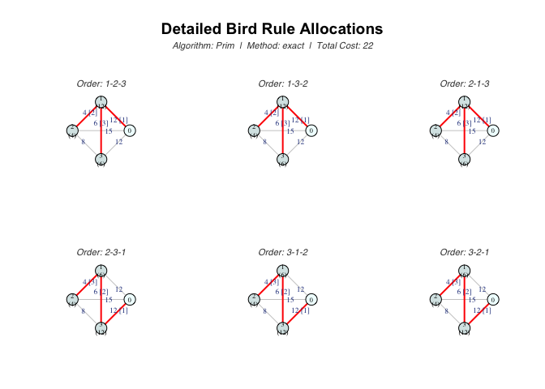
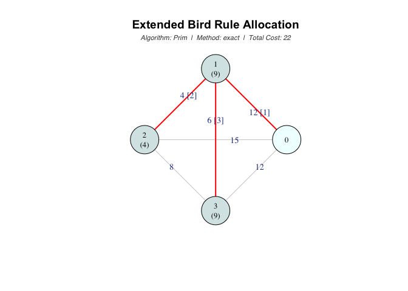
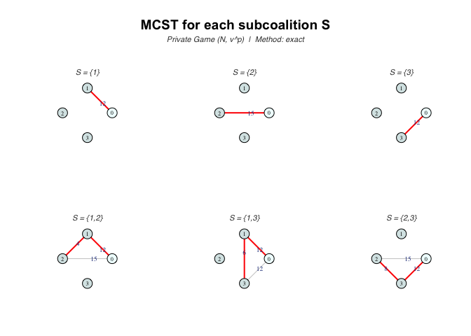
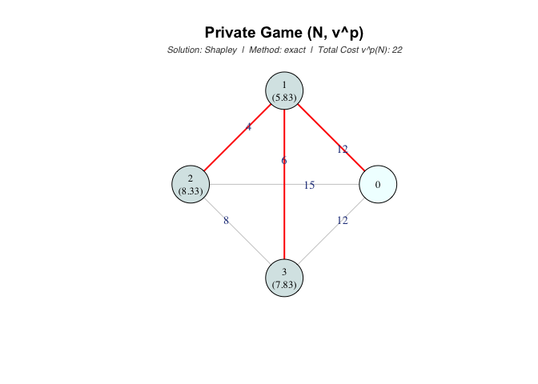
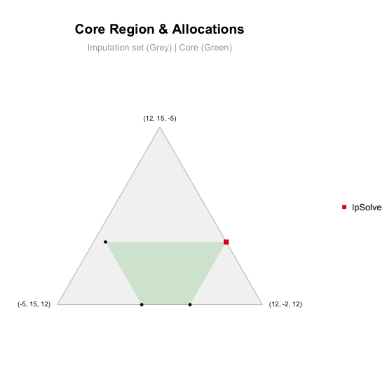
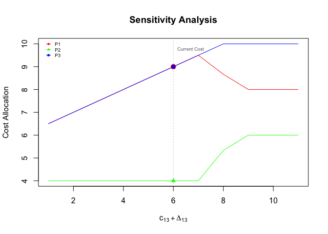

The goal of mcstprules is to provide a comprehensive set of tools to compute, analyze, and visualize cost allocation rules for Minimum Cost Spanning Tree Problems (MCSTP). The package implements algorithmic methods, rules based on cooperative game theory, and a robust suite of analytical tools.
Installation
You can install the development version of mcstprules from GitHub with:
# install.packages("remotes")
remotes::install_github("luciasouto13/mcstprules")
library(mcstprules)Features
The package organizes its functions into three main categories:
Algorithmic Rules
These rules are derived directly from the network’s structure and classic MST algorithms:
Prim-Based:
mcstBird(Bird) andmcstDuttaKar(Dutta-Kar).Kruskal-Based:
mcstFolk(Folk/ERO),mcstOWShapley(Optimistic Weighted Shapley), andmcstPWShapley(Pessimistic Weighted Shapley).Other Approaches:
mcstBoruvka(Boruvka) andmcstCone(Cone-wise Decomposition).
Cooperative Games
These rules compute the Shapley value or the Nucleolus of cooperative games associated with the MCSTP:
mcstGamePrivate: also known as the pessimistic game. Its Shapley value corresponds to Kar’s rule (mcstKar).mcstGameIrred: based on the irreducible cost matrix.mcstGameOpt: optimistic game approach.mcstGamePublic: connections through agents are publicly available.mcstGameCC: based on the cycle-complete matrix.
Analysis Tools
A comprehensive suite to evaluate stability and sensitivity:
Core Stability & Geometry:
mcstCoreCheck,mcstCorePoints, andmcstCorePlotto evaluate stability, find blocking coalitions, and visualize the core region.Sensitivity:
mcstStabilityRangeandmcstSensitivityto evaluate how cost variations affect optimal trees and cost allocations.Comparison:
mcstCompareto simultaneously evaluate the main rules.
Examples
The package is highly flexible and accepts network costs in multiple formats: square matrices, lower triangular vectors, edge lists, igraph objects, and even direct .csv or .xlsx file paths.
This basic example shows how to define a cost matrix and compute cost allocations for a 3-agent problem (where node 0 is the source):
library(mcstprules)
# Define a cost matrix for 3 agents + source (node 0)
# 1. Using an edge list format
costs <- data.frame(from = c(0, 0, 0, 1, 1, 2),
to = c(1, 2, 3, 2, 3, 3),
cost = c(12, 15, 12, 4, 6, 8))
# 2. Using a square matrix
# costs <- matrix(c(0, 12, 15, 12,
# 12, 0, 4, 6,
# 15, 4, 0, 8,
# 12, 6, 8, 0), nrow = 4, byrow = TRUE)
# 3. Using the lower triangular vector
# costs <- c(12, 15, 12, 4, 6, 8)
# Algorithmic rules
mcstBird(costs)
#> Non-unique MCST detected
#> 1 2 3
#> B(id) 12 4 6
#> E[B(pi)] 9 4 9
mcstFolk(costs)
#> 1 2 3
#> 7 7 8
# Cooperative game theory rules
mcstKar(costs)
#> S v^p(S)
#> 1 {1} 12
#> 2 {2} 15
#> 3 {3} 12
#> 4 {1,2} 16
#> 5 {1,3} 18
#> 6 {2,3} 20
#> 7 N 22
#>
#> Solution: Shapley
#> 1 2 3
#> 5.83 8.33 7.83
mcstGamePublic(costs, sol = "nucleolus")
#> S v^u(S)
#> 1 {1} 12
#> 2 {2} 15
#> 3 {3} 12
#> 4 {1,2} 16
#> 5 {1,3} 18
#> 6 {2,3} 20
#> 7 N 22
#>
#> Solution: Nucleolus
#> 1 2 3
#> 10 13 -1Comparing Rules
You can easily compare the standard allocation rules:
mcstCompare(costs)
#> ----------------------------------
#> MCST Allocation Rules Comparison
#> ----------------------------------
#> agent bird dutta_kar folk kar
#> 1 9 4 7 5.8
#> 2 4 9 7 8.3
#> 3 9 9 8 7.8Visualizing the problem
You can also visualize the network and the resulting allocation using the built-in plotting capabilities (based on the igraph package):
# Example plot for Bird's Rule
bird <- mcstBird(costs, draw = TRUE)

# Example plot for Private Game (Kar's rule)
kar <- mcstKar(costs, draw = TRUE)

Advanced Analysis
mcstprules provides advanced tools to evaluate the stability, geometric properties, and sensitivity of the computed rules:
# Core Stability Check
mcstCoreCheck(game = mcstGamePrivate(costs))
#> -------------------------
#> Core Stability Analysis
#> -------------------------
#> Players (n) : 3
#> Efficiency : Passed (Sum x: 22.00 | v(N): 22.00)
#> Rationality : Passed
#>
#> Result: the allocation IS IN THE CORE (Stable)
# Core Emptiness
core <- mcstCorePoints(game = mcstGamePrivate(costs)); core
#> -------------------------
#> Core Emptiness Analysis
#> -------------------------
#> Players (n) : 3
#> Total Cost : 22
#>
#> Result: the core IS NOT EMPTY
#> A feasible core allocation:
#> 1 2 3
#> 12 4 6
plot(core)
# Sensitivity Analysis
sens <- mcstSensitivity(costs, rule = "bird", arcs = c(1, 3))
plot(sens)
Documentation
You can also download the full PDF manual here.